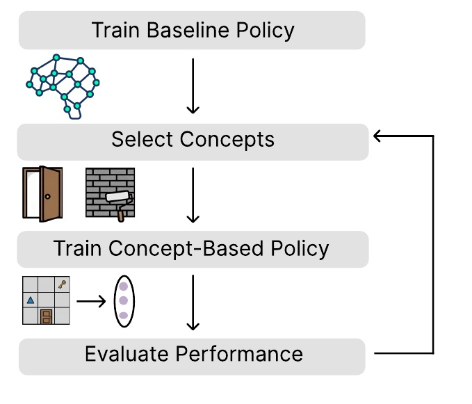

Publication · 2026
Selecting Decision-Relevant Concepts in Reinforcement Learning
arXiv, 2026

Abstract
Training interpretable concept-based policies requires practitioners to manually select which human-understandable concepts an agent should reason with when making sequential decisions. This selection demands domain expertise, is time-consuming and costly, scales poorly with the number of candidates, and provides no performance guarantees. To overcome this limitation, we propose the first algorithms for principled automatic concept selection in sequential decision-making. Our key insight is that concept selection can be viewed through the lens of state abstraction: intuitively, a concept is decision-relevant if removing it would cause the agent to confuse states that require different actions. As a result, agents should rely on decision-relevant concepts; states with the same concept representation should share the same optimal action, which preserves the optimal decision structure of the original state space. This perspective leads to the Decision-Relevant Selection (DRS) algorithm, which selects a subset of concepts from a candidate set, along with performance bounds relating the selected concepts to the performance of the resulting policy. Empirically, DRS automatically recovers manually curated concept sets while matching or exceeding their performance, and improves the effectiveness of test-time concept interventions across reinforcement learning benchmarks and real-world healthcare environments.
arXiv: 2604.04808